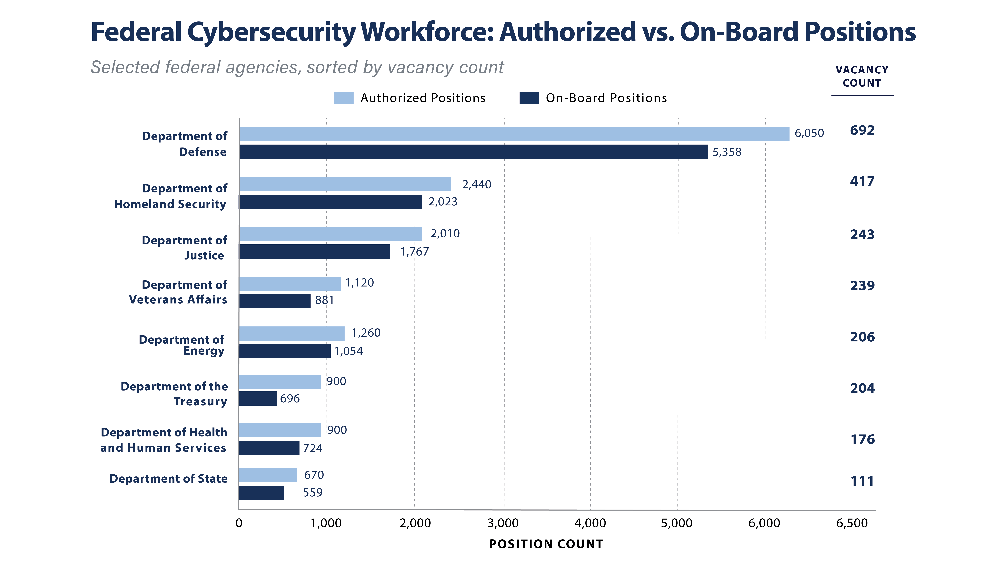
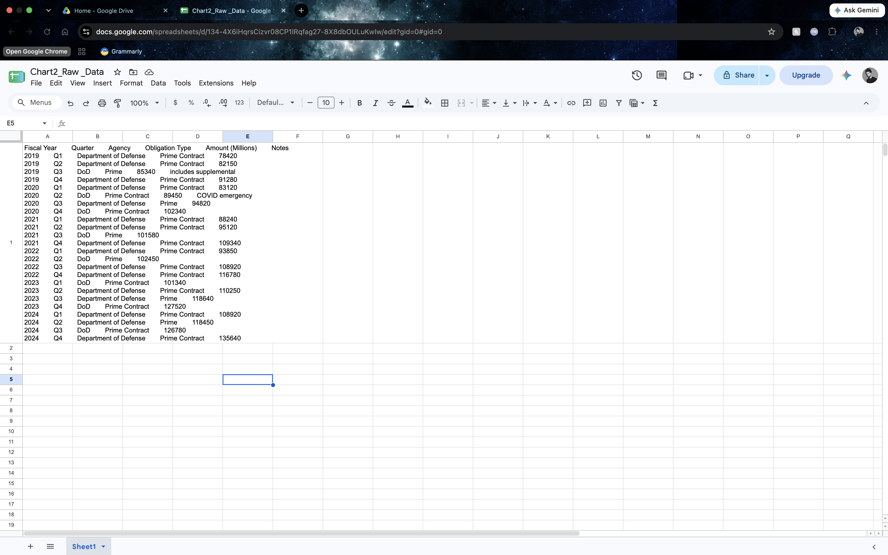
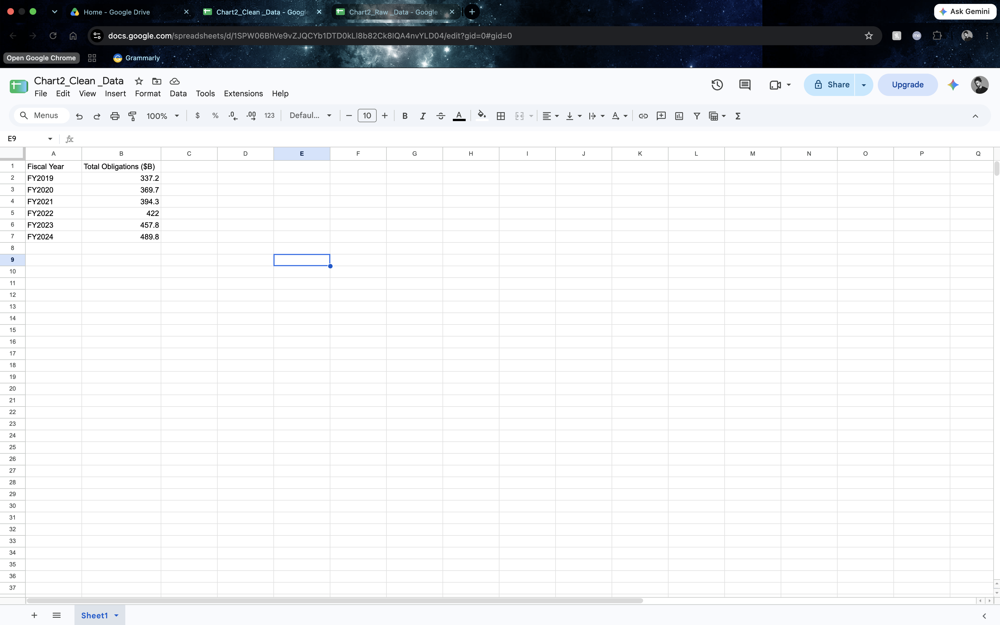
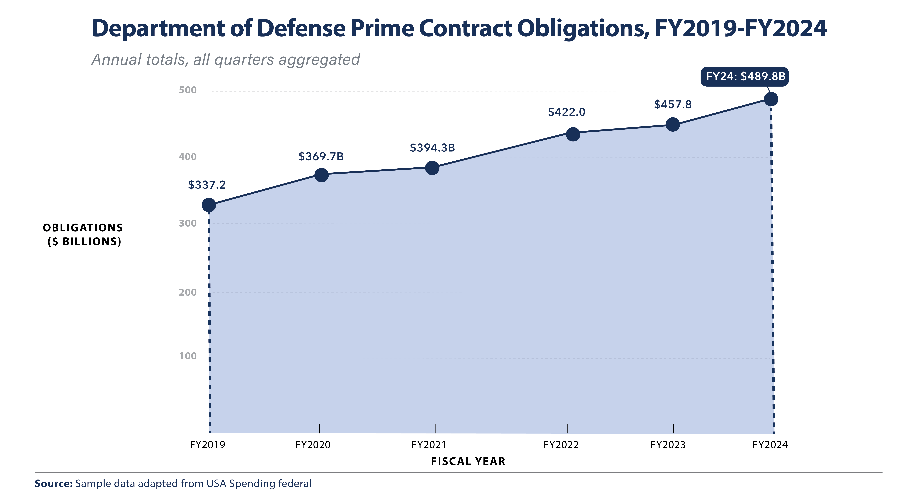
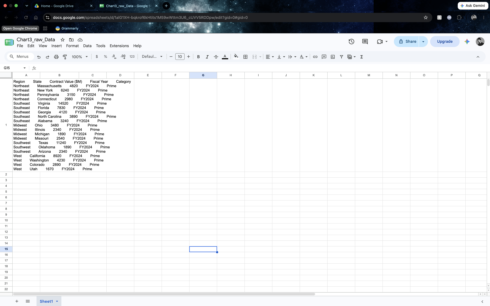
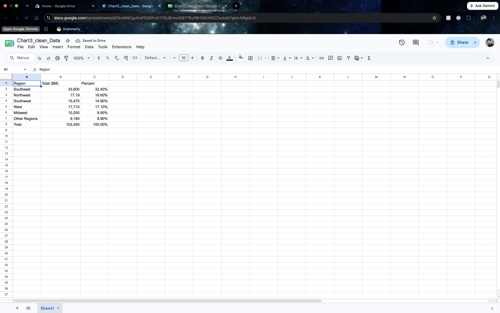
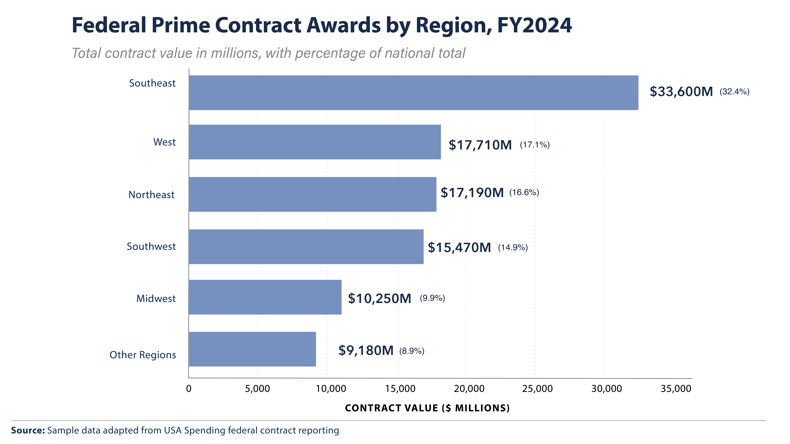
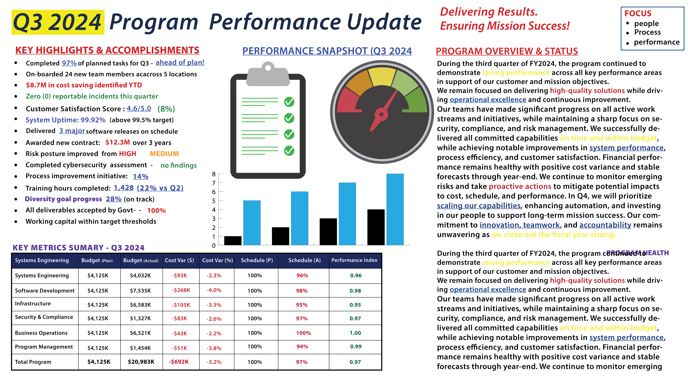
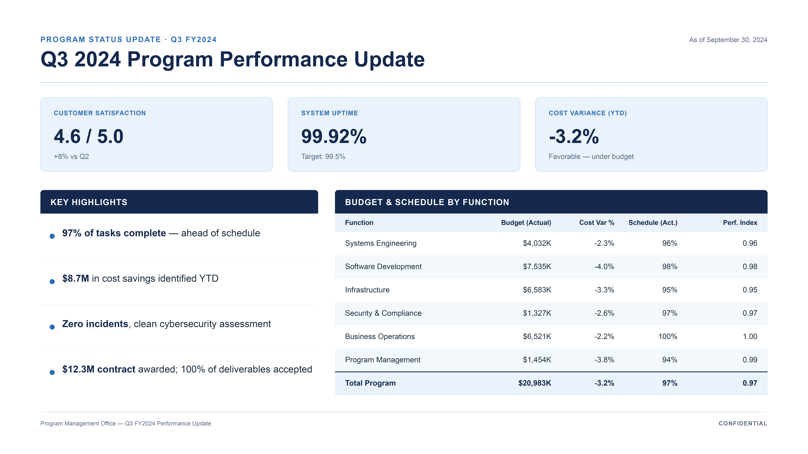

Featured Case Study, 001
Federal Graphic Design Portfolio
A complete visual identity, executive briefing template, and cyber operations data visualization system, developed as a comprehensive demonstration of end-to-end federal design capability.
The Office of Data Strategy and Modernization is a fictional agency created as a design vehicle to demonstrate the full range of visual work required in federal and defense environments. The project addresses a real gap in cleared portfolio work, where restrictions on client materials often leave designers with nothing to show reviewers.
The system was developed from scratch as an original design language. It carries a fictional Great Seal, a proprietary color palette, and a modular typographic system, all built to withstand the scrutiny of federal design reviewers while remaining flexible across executive briefings, operational dashboards, and stakeholder communications.
The visual language was calibrated to sit between two federal design traditions. Traditional government branding leans on heavy blue palettes and dense typography. Modern defense contractor design, from firms like Palantir and Anduril, favors editorial restraint and technical clarity. This system draws from both, using a navy base for institutional weight and generous negative space for readability under briefing conditions.
Every artifact was designed to a real use case. The branded stationery supports agency correspondence. The executive briefing template accommodates the Q2 program review format common in federal reporting. The cyber operations dashboard was built to communicate threat severity, incident status, and trend data at a glance, drawing on established conventions in security operations reporting.

Brand System
Letterhead, business cards, and stationery system establishing typographic hierarchy, color application, and layout rules for internal and external communications.

Executive Briefing Template
Modular slide system supporting program overview, strategic initiative tracking, and key metrics reporting. Designed for rapid population during quarterly review cycles.

Cyber Operations Dashboard
Data visualization system communicating threat severity distribution, incident status by category, and month-over-month trend data. Layout prioritizes glance-readability for command briefings.

Program Closeout
Summary and reporting layout completing the executive communications cycle, from initial briefing through interim review to program closeout.
- Complete brand identity system, seal, palette, and type
- Business card and letterhead set
- Executive briefing PowerPoint template
- Cyber incident data visualization system
- Program summary and closeout templates
- Chart and infographic library
Case Study, 002
Federal Cybersecurity Workforce Analysis
A grouped horizontal bar chart visualizing authorized versus filled cybersecurity positions across eight federal agencies, adapted from OPM federal workforce reporting.
This chart supports leadership decision-making by making the gap between authorized and filled cybersecurity positions immediately visible across eight federal agencies. It was built end-to-end from raw messy source data through cleaning, aggregation, and final chart design, in a form suitable for a decision brief or executive dashboard.

Final Visual
Grouped horizontal bars sorted by vacancy count descending. Vacancy count sidebar on the right makes the key insight scannable independent of interpreting bar-length differences.
Grouped horizontal bars were selected over a stacked bar or dual-axis alternative because the primary insight is the gap between authorized and filled positions per agency, not a cumulative total or trend. Bars are sorted by vacancy count descending so the reader's attention lands on the largest gaps first, and horizontal orientation accommodates long agency names without truncation. The vacancy count sidebar surfaces the key insight in a form that can be read without measuring bar length.
Case Study, 003
Department of Defense Contract Trend Analysis
A six-year area chart visualizing Department of Defense prime contract obligations across fiscal years 2019 through 2024, adapted from USA Spending federal contract reporting.
This chart communicates the growth trajectory of DoD prime contract obligations across six fiscal years, in a form intended for a decision brief or executive audience. The source data arrived quarterly and required cleaning, standardization of agency naming, and aggregation to annual totals before the final visual could be designed.
Step 01
Raw Source Data

Step 02
Cleaned and Aggregated

Step 03
Final Visual

The area chart was selected over a line-only or bar chart because the story is both directional trend and accumulated magnitude of federal contract growth. The filled area emphasizes the scale of the increase over six fiscal years, while the connecting line preserves precise year-over-year change. A bar chart would fragment the continuity of the trend. The FY2024 callout was added to draw the eye to the current-year takeaway without requiring the reader to interpret the endpoint themselves.
Case Study, 004
Federal Prime Contract Regional Distribution
A single-series horizontal bar chart visualizing the regional distribution of federal prime contract awards for fiscal year 2024, adapted from USA Spending contract data.
This chart visualizes the regional distribution of federal prime contract awards for fiscal year 2024, covering six regional groupings and $103.4 billion in total analyzed value. The source data arrived at the state level and required aggregation to regional totals and percentage calculation before the final visual could be designed.
Step 01
Raw Source Data

Step 02
Cleaned and Aggregated

Step 03
Final Visual

A simple horizontal bar chart was selected over a pie chart or 100 percent stacked bar because the audience needs to compare regional totals directly and read exact values. The bars are sorted from largest to smallest so the concentration of contract value in the Southeast is immediately visible. Each label pairs the absolute dollar amount with its percentage of national total, allowing the reader to work in either dimension without a separate legend or reference table.
Case Study, 005
Program Performance Briefing Redesign
A before-and-after demonstration of visual rebuild discipline applied to a Q3 program performance briefing slide, showing how information architecture and restrained typography can reduce cognitive load without removing information.
The original slide is representative of common failures seen in federal program reporting: high content density, competing color systems, inconsistent typography, and no clear visual hierarchy. The rebuild preserves the same underlying information while reducing surfaced content, unifying typography, and imposing a consistent color and layout system.

Before
The original slide packs twelve bullet points, a nine-column data table, competing accent colors, mixed typography, and decorative clip-art into a single screen. Multiple systems compete for attention with no visual hierarchy to guide the reader.

After
The rebuild surfaces three key metric callouts, four highlight bullets, and a simplified budget and schedule table. Typography reduces to one family with two weights. Palette reduces to navy and light blue over white, with a subtle accent for the eyebrow header.
The rebuild applies four principles common to federal decision-brief design. First, information hierarchy is imposed: the three metrics that matter most are lifted into card callouts at the top, and the remaining content is subordinated. Second, the color system is reduced to two supporting colors plus surface white, removing the visual noise of competing accent hues. Third, typography reduces to one family and two weights, eliminating the tonal competition of mixed serifs and italics. Fourth, the data table is redesigned with generous row spacing, subtle alternating shading, and a total row that anchors the summary.
The reader can identify the main takeaway of the rebuilt slide in under five seconds. The original slide requires the reader to search for structure that was not designed in.